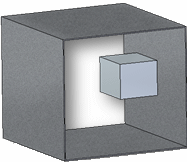
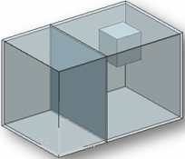
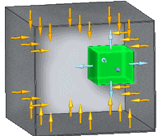
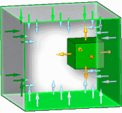

Radiation Load Options dialog box
The Radiation Load Options dialog box contains advanced options for creating or modifying radiation loads in thermal studies. You can open the dialog box using the Options button on the Loads command bar.
- Radiation type
-
Specifies the radiation load type.
- Radiation to Space
-
Defines the radiant exchange between a face or surface and infinite (blackbody) space.
- Enclosed Radiation
-
Defines the radiation exchange among a group of surface elements.
You can specify an Enclosure Ambient Element value in the Thermal Load Options dialog box.
- Ambient temperature
-
Specifies the surrounding temperature for Radiation to Space loads. Ambient temperature also is referred to as environment or bulk temperature.
The default temperature is 32.000 degrees F.
- Surface emissivity
-
For radiation to space loads, specifies the ability of a surface to absorb or emit thermal energy relative to a blackbody object. Values can be from 0 to 1.0.
A body with a surface emissivity of 1.0 is capable of absorbing or transmitting 100 percent of radiation. Most physical objects have surface emissivity less than 1.0.
- Absorptivity
-
For radiation to space loads, specifies the ability of a surface to absorb thermal energy.
- View factor
-
For radiation to space loads, defines the fraction of energy leaving a surface and reaching another surface or space. Values can be from 0 to 1.0.
For enclosure radiation loads, the view factor is calculated automatically.
When you create a Radiation simulation object within an enclosure, the solver computes the view or partial view between each element and all other elements.
-
The black body view factor is the view or partial view an element has of another element.
-
The gray body view factor is the fraction of total energy leaving one element that is absorbed by another. It includes the element's emissivity and the effect of reflections.
Example:Two parallel surfaces in close proximity have a view factor that tends to unity. Two surfaces that are nearly coplanar have a view factor that tends to zero.
Note:Calculation of the radiation view factors can be the most computer-intensive operation in thermal analysis. You can use the following shading options to minimize the processing time.
-
- ZTOL
-
For enclosure radiation loads applied to models with relatively small geometry and small mesh elements, ZTOL enables the study to solve without fatal errors. The ZTOL value is the assumed level of calculation below which the numbers are considered to be zero. (Real ≥ 0.0; Default=1e–10)
Example:Use the ZTOL parameter to resolve processing errors similar to the following:
In NX Nastran, ZTOL invokes the Gaussian integration view factor calculation method (the adaptive method). It is associated with a cavity ID, and includes fields which provide calculation control limits.
- Cavity #
-
For enclosure radiation loads, specifies the number of cavities or enclosed spaces. This is required, even if you are using only a single cavity. Surfaces in each cavity are totally independent of other cavities. They neither shade nor radiate to any surfaces other than the ones in their own cavity.
Values are whole numbers. The default (and minimum) is 1.
Example:Cavity #=1

Cavity #=2

Note:This value is the cavity where the selected entity resides. Two entities are considered to be in the same cavity if the cavity number is same for both entities.
- Can shade surfaces
-
When selected, specifies that a surface can shade other surfaces. This prevents thermal energy from reaching the other surfaces.
You can use this option to speed up view factor calculations by limiting calculations to surfaces which can shade other surfaces.
Example:The green object in this example is set to Can shade surfaces.

- Can be shaded by other surfaces
-
When selected, specifies that a surface can be shaded by other surfaces. Thermal energy is not absorbed by the selected surface.
You can use this option to speed up view factor calculations by limiting calculations to surfaces which can be shaded by other surfaces.
Example:The four interior walls in this example are set to Can be shaded by other surfaces.

How do I
Define a loadActivity: Apply a bearing load
Activity: Apply a centrifugal load
Activity: Apply a torque load
Activity: Apply a body temperature load
Learn more
Creating and using loadsLoad labels and symbols
Structural and body loads
Thermal loads
External loads (imported loads)
Loads directional steering wheel
Look up more details
Loads command barThermal Load Options dialog box
Color dialog box
Graphic Symbol Size dialog box